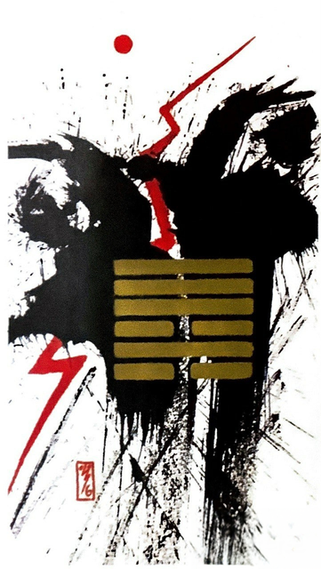

천수송(송사할 송)
소흉괘 1
먹을 것이 있으면 시비가 뒤따른다
서로의 강한 고집으로 화합하지 못하고 큰싸움으로 인해적대적인 관계가 된 상황을 표현한 그림
소송.분쟁.갈등.충돌.싸움.재판.질투.시샘.경쟁.논란.논쟁.분란.불화.시비.다툼.수술.사고.공격.방해공작
연애운
크게 다툼.이별 결심, 최근에 이별했거나 이혼 소송
사업운
의견 충돌.방해공작등으로 일이 막힘
속마음
썸마음에 안들고 나와 생각이 다르다고 생각하는 마음
1년 이상이별을 결심하는 마음. 소통이 안된다고 생각하는마음
이별 후아직도 스트레스 받고 예민한 마음. 재회 하고 싶지 않은마음
솔로연애운
새로운 이성 생길 확률 적다
건강운
심장병.신경통.히스테리